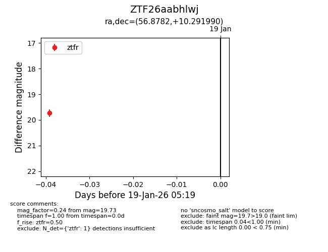
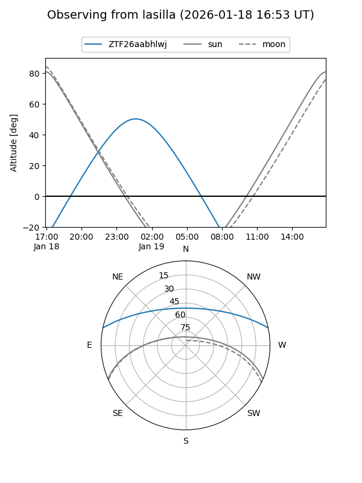
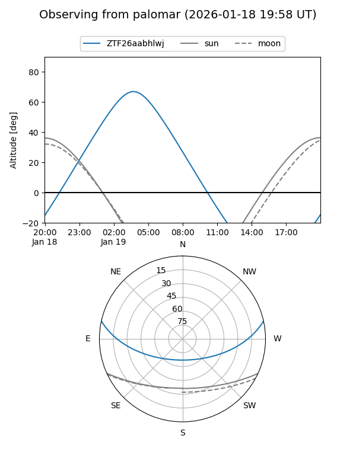

ZTF26aabhlwj
Target ZTF26aabhlwj at 2026-01-19 05:20
Aliases and brokers:
FINK: link
Lasair: link
ALeRCE: link
alt names
ZTF26aabhlwj (ztf,fink_ztf)
Coordinates:
equatorial (ra, dec) = 56.8782,+10.29199
equatorial (HMS+DMS) = 03:47:30.76,+10:17:31.16
galactic (l, b) = (177.7694,-33.24609)
Flags:
Photometry:
last ztfr=19.73
1 ztfr detections
Lightcurve

Visibility


Additional plots